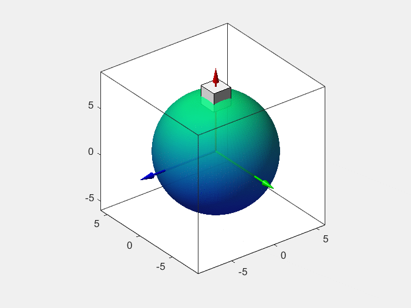

Numerical Algorithms
1. Variational Unscented Kalman Filter (UKF-V) for Satellite Attitude Estimation
Description: The following animated simulation shows the estimated trajectory of a Cubic satellite. Using the proposed algorithm, the estimated error is significantly reduced to a low level.
Reference: Tianzhi Li and Jinzhi Wang, Variational unscented Kalman filter on matrix Lie groups, Automatica, 172: 111995, 2025.
|  |
2. Optimal Control of n-DOF Gaussian Distributions
Description: The following animated simulation shows the optimal trajectory of a controlled 3-DOF Gaussian distribution. The initial Gaussian distribution is controlled to the desired state
 while minimizing the energy cost over the time window .
while minimizing the energy cost over the time window .Reference: Tianzhi Li, Rui Fu, and Jinzhi Wang, Reduced dynamics and geometric optimal control of nonequilibrium thermodynamics: Gaussian case, Automatica, 164: 111626, 2024.